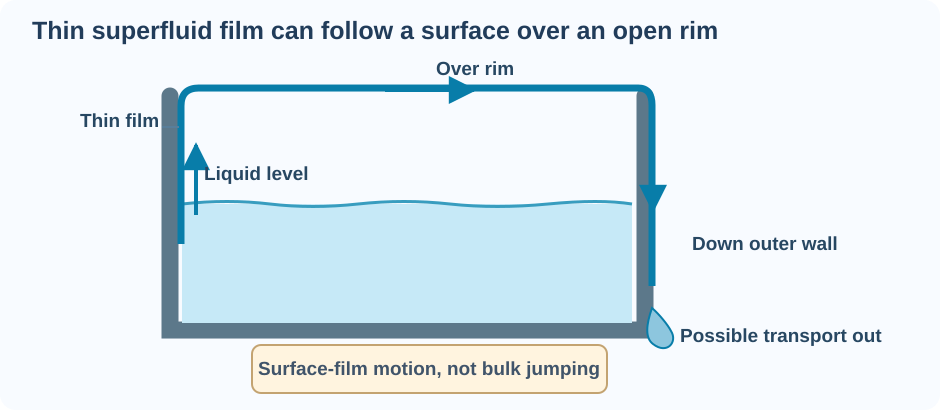
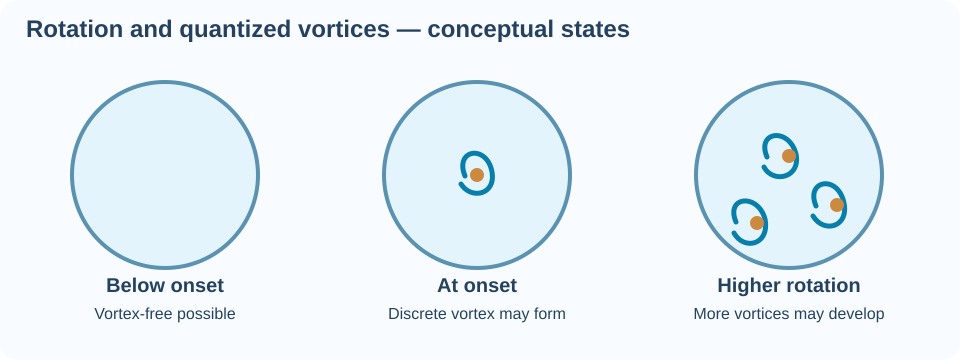
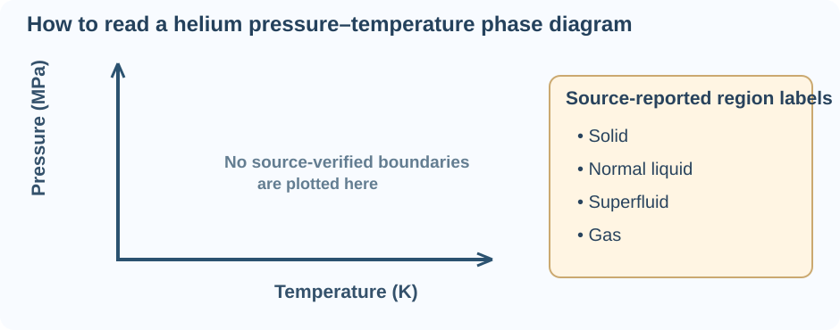

Ordinary viscous liquid
Internal viscous forces can gradually slow circulating motion and convert organized mechanical motion into thermal energy.
GRADE XI · FLUID MECHANICS · TOPIC 6.7 · FINAL TOPIC
Discover what zero viscosity means, why a superfluid can creep over a container wall, how quantized vortices can persist and what liquid-helium temperatures tell us.
V95-B7 public study preview — not a completed or officially approved Unit 6 course. New teaching explanations grounded in the owner's private prepared Topic 6.7 master (compiled pp.289–311), merged V94-C2.7 academic QC and official FBISE HSSC-I assessment framework. The printed NBF p.106, Figures 6.16–6.17 and information box have not been comprehensively verified image-by-image. This page includes only independently authored diagrams; it does not reproduce the original textbook Figure 6.17 embedded in the private notes. Source-reported helium numbers are provisional pending original-page verification.
Source: the official owner-supplied FBISE Grade XI framework, PDF p.12. This is an outcome-level classification. It does not automatically certify any of the author-written 80 MCQs or supplementary questions as official board items.
01 · CONCEPT AND LANGUAGE
Viscosity describes the internal resistance a fluid offers to relative sliding motion of its layers. Ordinary liquids such as water and oil possess viscosity, so motion can lose mechanical energy through viscous dissipation. In the simplified textbook description, a superfluid is an unusual liquid state with zero viscosity that can sustain flow without the usual viscous resistance.
Internal viscous forces can gradually slow circulating motion and convert organized mechanical motion into thermal energy.
Ordinary viscous resistance of the superfluid component is absent, allowing unusual long-lived flow, thin-film transport and quantized vortices.
Mass, volume, density, gravity, pressure and other physical interactions still matter. Actual helium can have normal and superfluid components; not every process is free of dissipation.
Superfluidity is associated with a macroscopic quantum-mechanical state. That origin helps explain why its behaviour differs from the motion of an ordinary classical liquid. The exam focus here is to describe the phenomena, not to derive microscopic quantum theory.
02 · SUPPORTED PHENOMENON
A very thin superfluid film can spread along surfaces, move up the inner wall of an open vessel, pass over its rim and continue down the outside. Under suitable conditions this surface-film transport can carry liquid out, giving rise to the textbook expression that a superfluid container may appear to “empty itself.”

The absence of ordinary viscous resistance is important, but by itself does not explain every microscopic surface-film interaction. An appropriately sealed container that lacks the same exposed surface path does not automatically empty in this way.
03 · MOTION THAT CAN PERSIST
A vortex is a circulating pattern of fluid motion. In the simplified superfluid description, an established vortex can persist for a very long time because ordinary viscous damping is absent. “Persistent” does not mean the liquid contains infinite kinetic energy or that no real disturbance could ever affect it.

The source discusses a critical angular velocity for a particular arrangement. Below onset, the superfluid component may remain vortex-free; after suitable onset, quantized vortices may form. With further rotation, more vortices may appear.
04 · SOURCE-REPORTED HELIUM BENCHMARKS AND PHASE READING
The prepared NBF-guided information box reports characteristic superfluid transition temperatures of ⁴He below approximately 2.17 K and ³He below approximately 0.0025 K. Their respective millikelvin representations are 2170 mK and 2.5 mK. These are reported approximate reference values under relevant conditions, not universal boundaries for all pressures, isotopes or other liquids.
Prepared source transition benchmark: 2.17 K = 2170 mK. A low-temperature liquid example commonly used to explain superfluidity.
Prepared source transition benchmark: 0.0025 K = 2.5 mK. Its superfluid transition occurs at a much lower temperature in the quoted comparison.
The described NBF helium phase chart has temperature (K) on the horizontal axis, pressure (MPa) on the vertical axis, and regions labelled solid, normal liquid, superfluid and gas. Use both coordinates to identify a state, and verify the correct boundary from a trusted source before classifying a particular temperature–pressure point.

At a boundary the material can change phase; a point inside a region corresponds to the labelled state in that source diagram. A sketch without verified numeric boundary coordinates cannot be used to calculate a precise critical pressure or classify arbitrary plotted points. Consult your original NBF textbook if a task requires detailed Figure 6.17 boundary reading.
05 · RELATED SCIENCE AND LIMITATIONS
The prepared source describes cooling helium to extremely low temperatures, mentioning compression followed by controlled expansion through a nozzle. This is introductory context, not a complete cryogenic procedure: compression alone does not guarantee cooling, and laboratory superfluid preparation requires specialized equipment and thermodynamic control. This page gives no operational cryogenics instructions.
Persistent quantum-fluid motion is relevant to sensitive rotation research; not all gyroscopes use a superfluid.
Some specialized low-temperature experiments study unusually slow light. Do not claim slowing light is an automatic property of every superfluid.
Superfluid constituents have been proposed in models of neutron-star interiors. This is a scientific interpretation, not direct classroom observation of neutron-star matter.
Superconductivity is different: A superconducting solid is associated with zero electrical resistance under appropriate conditions. A superfluid liquid is associated with the absence of ordinary viscous resistance. Both can involve quantum phenomena, but they are not synonyms.
The prepared NBF Fluid Mechanics and Medical Technology box on printed p.107 belongs to chapter-wide enrichment and is not a separate prescribed superfluidity SLO B43 derivation.
06 · SUPPLEMENTARY NUMERICAL FLUENCY
The following use the two prepared source-reported temperature benchmarks. These are the teacher-created Part C's eight supplementary conversions and comparisons, not original numbered NBF superfluidity exercises nor an independent FBISE B43 mathematical requirement. Numbers reflect approximate reference temperatures, not universal high-precision phase boundaries.
07 · INTERACTIVE, NON-GRADED PRACTICE
Use the first tool to convert kelvin into millikelvin, microkelvin and Celsius, and compare it numerically with the source-reported ⁴He or ³He reference. It deliberately does not declare a verified actual phase from temperature alone.
This second tool explains what a selected superfluid observation can support. It is not a simulation of real experimental dynamics or a source-derived vortex-counting instrument.
Both learning tools run only in the browser. No student names, personal information, scores or answers are saved or transmitted. These are supplementary aids; they cannot certify a helium sample's physical state, plot the exact textbook phase boundary or calculate a universal critical rotation threshold.
08 · EXPLAIN AND REVISE
A special liquid state characterized by zero viscosity in the textbook idealization, with implications including thin-film wall creep and persistent vortices.
No. Viscosity, mass, density and gravity describe different physical properties. A superfluid still occupies volume and responds to forces.
A thin superfluid film can move over the rim and down the outside wall along a continuous surface path, carrying liquid away under suitable conditions.
In the simplified zero-viscosity model, ordinary viscous damping is absent, allowing long-lived circulation. Real experimental disturbances can still affect it.
Circulation occurs in discrete allowed units. It does not prescribe one universal rotational speed or imply that every fluid particle has only a small list of speeds.
Helium-3: approximately 0.0025 K (2.5 mK), lower than helium-4's reported 2.17 K.
Temperature (K) is horizontal; pressure (MPa) vertical. The prepared source reports solid, normal liquid, superfluid and gas regions. The original phase boundaries are not reproduced here.
Phase depends on isotope, temperature and pressure. The quoted benchmarks are approximate and conditional; exact phase classification needs verified boundaries.
No. Superconductivity concerns electrical resistance; superfluidity concerns viscous resistance in a liquid. They are related quantum topics but not equivalent states.
No additional quantitative law is specified in the supplied B43 outcome, which is summative at Understanding level. Temperature-unit examples on this page are supplementary fluency practice, not original NBF numbered exercises.
Core statement: η = 0 Pa·s (idealized)
Wall creep: thin film moves over accessible rim
Persistent motion: no ordinary viscous slowing
Vortex quantization: circulation in discrete units
⁴He source benchmark: 2.17 K = 2170 mK
³He source benchmark: 0.0025 K = 2.5 mK
Phase axes: temperature (K), pressure (MPa)
FBISE: P-11-B-43 · Summative · Understanding
This completes the seventh detailed student lesson preview. Continue using the existing Superfluidity Explorer simulation, the original 80 provisional Topic 6.7 MCQs and the Unit 6 Learning Desk. Final teacher signoff, source figure fidelity, individual question certification and full assessment integration are still pending.
Source boundary: owner-prepared compiled Unit 6 pp.289–311 and merged V94-C2.7; official FBISE HSSC-I framework p.12. Printed NBF p.106 and figures require direct comparison before declaring source-exactness. The original NBF Figure 6.17 excerpt in the private teacher file has not been published here. No real cryogenic procedures or protected textbook images have been introduced.